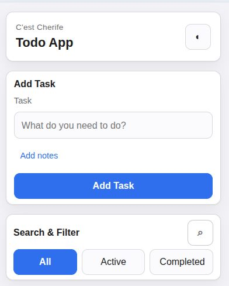
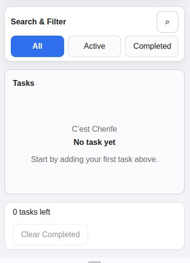

Case Study
C'est Cherife Todo
C'est Cherife Todo is a shipped todo app built to deliver clean task management through a focused interface and strong frontend execution.
Stack
Problem
Task-management tools often become visually noisy or overly complex, which makes simple daily planning feel heavier than it should. This project addresses that friction with a clearer and more structured interface.
Product Direction
The interface needed to prioritize clarity, structure, and usability so users could add, review, and manage tasks quickly without distraction.
- Kept layout hierarchy simple so key actions remain obvious.
- Used consistent spacing and typography for faster scanning.
- Focused on predictable interaction flow for practical everyday use.
My Contribution
I owned the build end to end as the frontend builder, translating product intent into a polished, responsive interface.
- Structured the UI around readable task groups and clear action states.
- Implemented responsive behavior so workflows remain usable on mobile and desktop.
- Delivered HTML, CSS, and JavaScript implementation with maintainable structure.
Visual Proof



Why It Matters
This project is strong proof of execution because it combines product thinking with practical frontend delivery in a clean, usable experience.
It demonstrates my ability to move from interface concept to polished implementation with attention to structure, responsiveness, and interaction quality.